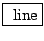

Example C03.zipper.noise.pd (Figure 3.13, part b) demonstrates the effect of converting a slowly-updated control stream to an audio signal. This introduces a new object:
:
a ramp generator with control output. Like line~, line takes pairs of numbers as (target, time) pairs and ramps to the target in the
given amount of time; however, unlike line~, the output is
a numeric control stream, appearing, by default, at 20 msec time intervals.
In the example you can compare the sound of the rising and falling amplitude controlled by the line output with one controlled by the audio signal generated by line~.
The output of line is converted to an audio signal at the input of the *~ object. The conversion is implied here by connecting a numeric control stream into a signal inlet. In Pd, implicit conversions from numeric control streams to audio streams is done in the fast-as-possible mode shown in Figure 3.4 (part a). The line output becomes a staircase signal with 50 steps per second. The result is commonly called ``zipper noise".
Whereas the limitations of the line object for generating audio signals were clearly audible even over such long time periods as 300 msec, the signal variant, line~, does not yield audible problems until the time periods involved become much shorter. Example C04.control.to.signal.pd (Figure 3.13, part c) demonstrates the effect of using line~ to generate a 250 Hertz triangle wave. Here the effects shown in Figure 3.5 come into play. Since line~ always aligns line segments to block boundaries, the exact durations of line segments vary, and in this example the variation (on the order of a millisecond) is a significant fraction of their length.
A more precise object (and a more expensive one, in terms of computation time) is provided for these situations:
 :
exact line segment generator. This third member of the ``line" family
outputs an audio signal (like line~), but aligns the endpoints of the signal to
the desired time points, accurate to a fraction of a sample. (The accuracy
is limited only by the floating-point numerical format used by Pd.) Further,
many line segments may be specified withing a single audio block;
vline~ can generate waveforms at periods down to two samples
(beyond which you will just get foldover instead).
:
exact line segment generator. This third member of the ``line" family
outputs an audio signal (like line~), but aligns the endpoints of the signal to
the desired time points, accurate to a fraction of a sample. (The accuracy
is limited only by the floating-point numerical format used by Pd.) Further,
many line segments may be specified withing a single audio block;
vline~ can generate waveforms at periods down to two samples
(beyond which you will just get foldover instead).
The vline~ object can also be used for converting numeric control streams to audio streams in the nearest-sample and two-point-interpolation modes as shown in Figure 3.4 (parts b and c). To get nearest-sample conversion, simply give vline~ a ramp time of zero. For linear interpolation, give it a ramp time of one sample (0.0227 msec if the sample rate is 44100 Hertz).